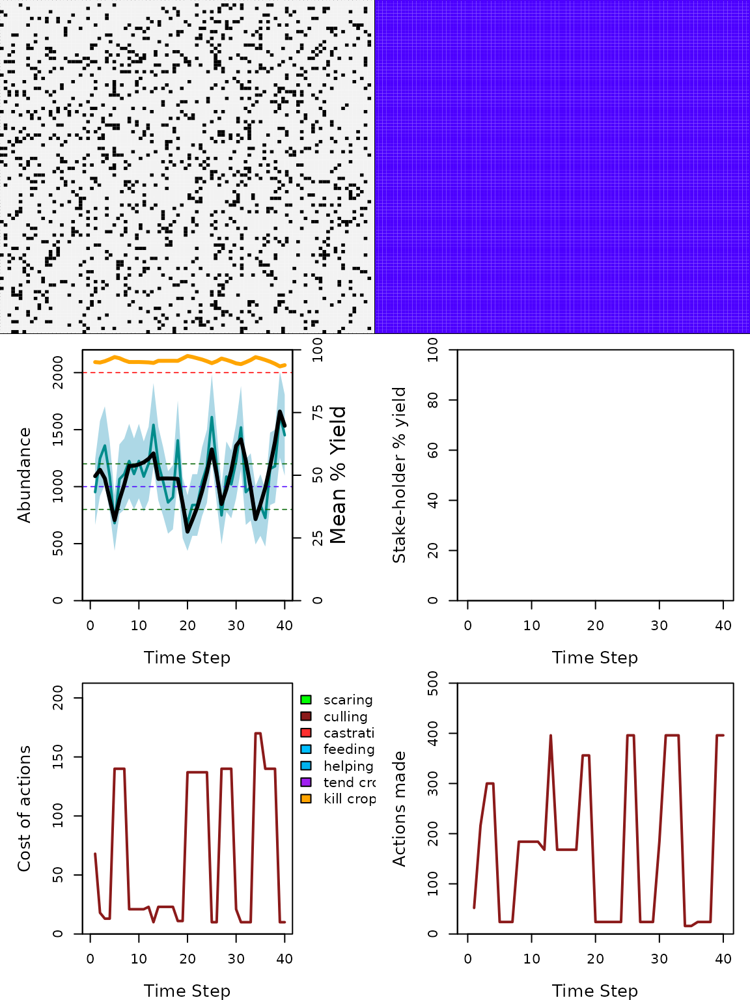

vignettes/SI8.Rmd
SI8.RmdIn the context of adaptive management of conservation conflict, managers tend to invest their ressources in updating the conservation policy as soon as possible. But leaving the policy unchanged when the population is close enough to the target could actually save money, time, and energy, and enpower managers for the next iteration.
In this GMSE option, the notion of ‘close enough to the target’ is represented by the action_thres parameter (i.e., ‘action threshold’, which can take values between 0 and 1). The parameter is a fraction of the manager target (manage_target) added up and down the target value, defining a band around it. When managers observe the population size to be within this band, they assume that the current policy is satisfactory, so the genetic algorithm is not called and the policy is kept unchanged. For example, with action_thres = 0.1 and manage_target = 1000, the manager will update the policy only if the population is under 900, or above 1100 individuals.
The notion of time, money, and energy saved when leaving the policy unchanged is represented by the budget_bonus parameter. If, in a previous time step, managers did not update the policy, they will receive an extra fraction of their initial budget in the following time step. For example, with budget_bonus = 0.5 and manage_budget = 1000, this extra fraction will be 500 arbitrary budget units. This budget bonus is cumulative, so managers can stack budget bonuses if they do not update the policy for several consecutive time steps, but they lose it all as soon as they do.
Here is a default simulation where managers update every time step.
sim.fli <- gmse();
## [1] "Initialising simulations ... "
## [1] "Generation 30 of 40"And here the same simulation, except managers update policy only when they observe the population to be plus or minus the target by 20%, and receive a bonus of 30% of their initial budget when they do not.
sim.ati <- gmse(action_thres = 0.2, budget_bonus = 0.3);
## [1] "Initialising simulations ... "
## [1] "Generation 35 of 40"
Note how the costs plateau (lower left panel) when the population monitored (blue line, upper left panel) is in between the two green dotted lines. Leaving the policy unchanged in these cases allowed managers to set the costs higher than the default maximum of 110 budget units. It also affects the number of cullings performed by users (lower right panel), which is more stable than when managers update policy every time step.